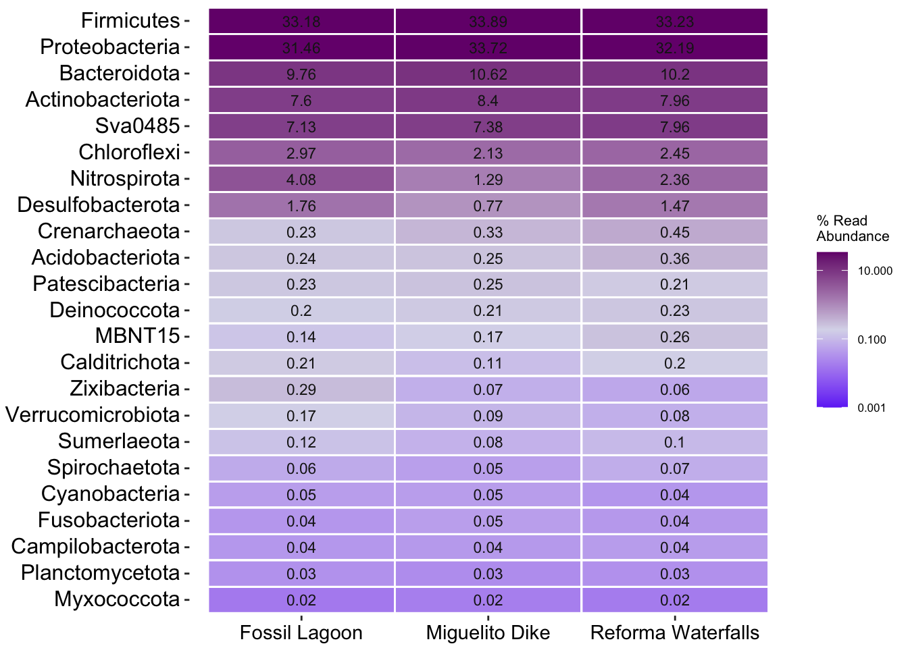

Core Microbiome
Load libraries and prepare data
#load data
physeq <- readRDS("rds/interior_mangroves/phyloseq.rds")# Convert Location to factor
sample_data(physeq)$Location <- as.factor(sample_data(physeq)$Location)01. Calculate core
# Prevalence threshold
prevalence_threshold <- 0.8
# Storage ASVs core list
core_list <- list()
locations <- levels(sample_data(physeq)$Location)
# Calculate core
for (loc in locations) {
# Filter samples by mangrove system
physeq_loc <- prune_samples(sample_data(physeq)$Location == loc, physeq)
n_samples_loc <- nsamples(physeq_loc)
# Extract OTU table
otu <- as(otu_table(physeq_loc), "matrix")
# Calc prevalence
prevalence <- rowSums(otu > 0) / n_samples_loc
# Identify ASVs with prevalence >= umbral
core_taxa <- names(prevalence)[prevalence >= prevalence_threshold]
# Guardar en la lista
core_list[[loc]] <- core_taxa
}
# Show ASVs core by mangrove system
print(lapply(core_list, length))$`Fossil Lagoon`
[1] 1043
$`Miguelito Dike`
[1] 585
$`Reforma Waterfalls`
[1] 1454# checkpoint,if empty try threshold = 1
if (all(sapply(core_list, length) == 0)) {
cat("Try prevalence = 1...\n")
prevalence_threshold <- 1.0
core_list <- list()
for (loc in locations) {
physeq_loc <- prune_samples(sample_data(physeq)$Location == loc, physeq)
n_samples_loc <- nsamples(physeq_loc)
otu <- as(otu_table(physeq_loc), "matrix")
prevalence <- rowSums(otu > 0) / n_samples_loc
core_taxa <- names(prevalence)[prevalence >= prevalence_threshold]
core_list[[loc]] <- core_taxa
}
print(lapply(core_list, length))
}02. Extract core info
# Unique core ASV list
all_core_asvs <- unique(unlist(core_list))
# Create matrix presence/absence
core_matrix <- matrix(0, nrow = length(all_core_asvs), ncol = length(locations),
dimnames = list(all_core_asvs, locations))
# fill matrix:
for (loc in locations) {
core_matrix[core_list[[loc]], loc] <- 1
}
# Convert to data frame to UpSetR
core_df <- as.data.frame(core_matrix)
# Create intersection list
queries_list <- list()03. plot aesthetics
#library(UpSetR)
# Fossil Lagoon
queries_list <- append(queries_list, list(
list(query = intersects, params = list("Fossil Lagoon"), color = "#A3D9A8",
active = TRUE, query.name = "Fossil Lagoon")))
# Reforma Waterfalls
queries_list <- append(queries_list, list(
list(query = intersects, params = list("Reforma Waterfalls"), color = "#44C17B",
active = TRUE, query.name = "Reforma Waterfalls")))
# Miguelito Dike
queries_list <- append(queries_list, list(
list(query = intersects, params = list("Miguelito Dike"), color = "#2E8B57",
active = TRUE, query.name = "Miguelito Dike")))
# Core
queries_list <- append(queries_list, list(
list(query = intersects, params = list("Fossil Lagoon",
"Reforma Waterfalls",
"Miguelito Dike"),
color = "#8D3CA3", active = TRUE, query.name = "Core")))04. UpSet plot
#library(UpSetR)
upset_plot <- upset(core_df,
sets = colnames(core_df),
order.by = "freq",
mainbar.y.label = "Shared ASVs",
sets.x.label = "ASVs per Site",
text.scale = 1.3,
point.size = 4,
line.size = 1.5,
query.legend = "bottom",
sets.bar.color =
c("#44C17B","#A3D9A8","#2E8B57"),
queries = queries_list)
# show
print(upset_plot)save plot
05. Get unique and core ASV info
### get unique ASVs per mangrove system
unique_asvs <- list()
for (loc in colnames(core_df)) {
unique_asvs[[loc]] <- rownames(core_df)[rowSums(core_df == 1) == 1 & core_df[[loc]] == 1]
cat(loc, ": Unique ASVs:", length(unique_asvs[[loc]]), "\n")
print(head(unique_asvs[[loc]], 5)) # Show first 5
}Fossil Lagoon : Unique ASVs: 551
[1] "ASV_1157" "ASV_2508" "ASV_7072" "ASV_3541" "ASV_2759"
Miguelito Dike : Unique ASVs: 199
[1] "ASV_115" "ASV_1676" "ASV_4663" "ASV_1294" "ASV_1092"
Reforma Waterfalls : Unique ASVs: 867
[1] "ASV_6234" "ASV_1191" "ASV_5039" "ASV_2114" "ASV_5289"#unique_asvs# Verify taxonomy
if (!is.null(tax_table(physeq))) {
tax_table_df <- as.data.frame(tax_table(physeq))
# Get taxonomy function
get_taxonomy <- function(asv_list) {
if (length(asv_list) > 0) {
taxonomy <- tax_table_df[asv_list, , drop = FALSE]
return(taxonomy)
} else {
return(NULL)
}
}
# Get taxonomy
taxonomy_unique <- lapply(unique_asvs, get_taxonomy)
# show first 5 unique ASVs
for (loc in names(taxonomy_unique)) {
cat("\nFirst unique ASVs taxonomy", loc, ":\n")
if (!is.null(taxonomy_unique[[loc]])) {
print(head(taxonomy_unique[[loc]], 5))
} else {
cat("There are no unique ASV to", loc, "\n")
}
}
} else {
cat("Please import taxonomy.\n")
}
First unique ASVs taxonomy Fossil Lagoon :
Kingdom Phylum Class Order Family
ASV_1157 d__Archaea Crenarchaeota Bathyarchaeia Bathyarchaeia Bathyarchaeia
ASV_2508 d__Archaea Crenarchaeota Bathyarchaeia Bathyarchaeia Bathyarchaeia
ASV_7072 d__Archaea Crenarchaeota Bathyarchaeia Bathyarchaeia Bathyarchaeia
ASV_3541 d__Archaea Crenarchaeota Bathyarchaeia Bathyarchaeia Bathyarchaeia
ASV_2759 d__Archaea Crenarchaeota Bathyarchaeia Bathyarchaeia Bathyarchaeia
Genus Species
ASV_1157 Bathyarchaeia <NA>
ASV_2508 Bathyarchaeia <NA>
ASV_7072 Bathyarchaeia <NA>
ASV_3541 Bathyarchaeia <NA>
ASV_2759 Bathyarchaeia uncultured_methanogenic
First unique ASVs taxonomy Miguelito Dike :
Kingdom Phylum Class
ASV_115 d__Archaea Crenarchaeota Bathyarchaeia
ASV_1676 d__Archaea Crenarchaeota Bathyarchaeia
ASV_4663 d__Archaea Crenarchaeota Bathyarchaeia
ASV_1294 d__Archaea Crenarchaeota Bathyarchaeia
ASV_1092 d__Archaea Thermoplasmatota Thermoplasmata
Order Family
ASV_115 Bathyarchaeia Bathyarchaeia
ASV_1676 Bathyarchaeia Bathyarchaeia
ASV_4663 Bathyarchaeia Bathyarchaeia
ASV_1294 Bathyarchaeia Bathyarchaeia
ASV_1092 Marine_Benthic_Group_D_and_DHVEG-1 Marine_Benthic_Group_D_and_DHVEG-1
Genus Species
ASV_115 Bathyarchaeia uncultured_bacterium
ASV_1676 Bathyarchaeia uncultured_methanogenic
ASV_4663 Bathyarchaeia uncultured_methanogenic
ASV_1294 Bathyarchaeia <NA>
ASV_1092 Marine_Benthic_Group_D_and_DHVEG-1 uncultured_Thermoplasmata
First unique ASVs taxonomy Reforma Waterfalls :
Kingdom Phylum Class Order Family
ASV_6234 d__Archaea Crenarchaeota Bathyarchaeia Bathyarchaeia Bathyarchaeia
ASV_1191 d__Archaea Crenarchaeota Bathyarchaeia Bathyarchaeia Bathyarchaeia
ASV_5039 d__Archaea Crenarchaeota Bathyarchaeia Bathyarchaeia Bathyarchaeia
ASV_2114 d__Archaea Crenarchaeota Bathyarchaeia Bathyarchaeia Bathyarchaeia
ASV_5289 d__Archaea Crenarchaeota Bathyarchaeia Bathyarchaeia Bathyarchaeia
Genus Species
ASV_6234 Bathyarchaeia uncultured_methanogenic
ASV_1191 Bathyarchaeia <NA>
ASV_5039 Bathyarchaeia uncultured_methanogenic
ASV_2114 Bathyarchaeia uncultured_crenarchaeote
ASV_5289 Bathyarchaeia uncultured_Bathyarchaeota# Confirm the total number of unique ASVs
lapply(taxonomy_unique, function(x) if (!is.null(x)) nrow(x) else 0)$`Fossil Lagoon`
[1] 551
$`Miguelito Dike`
[1] 199
$`Reforma Waterfalls`
[1] 867Get taxonomy
Phylum level
# Create a list to store unique asv to Phylum level
phylum_unique <- list()
# Iterate on each Mangrove system
for (loc in names(taxonomy_unique)) {
if (!is.null(taxonomy_unique[[loc]])) {
# Extract taxonomy phylum
tax_df <- taxonomy_unique[[loc]]
if ("Phylum" %in% colnames(tax_df)) {
phylum <- tax_df$Phylum
phylum <- phylum[!is.na(phylum)] # Exclude NA
phylum_unique[[loc]] <- unique(phylum)
} else {
cat("Phylum is not available to", loc, "\n")
phylum_unique[[loc]] <- character(0)
}
} else {
phylum_unique[[loc]] <- character(0)
}
}
# Identify exclusive phylum for Mangrove system
all_phylums <- unique(unlist(phylum_unique))
phylum_exclusive <- list()
for (loc in names(phylum_unique)) {
other_locations <- setdiff(names(phylum_unique), loc)
other_phylum <- unique(unlist(phylum_unique[other_locations]))
exclusive_phylum <- setdiff(phylum_unique[[loc]], other_phylum)
phylum_exclusive[[loc]] <- exclusive_phylum
cat("Exclusive phylum in", loc, ":", length(exclusive_phylum), "\n")
if (length(exclusive_phylum) > 0) {
print(exclusive_phylum)
} else {
cat("There are not exclusive phylum.\n")
}
}Exclusive phylum in Fossil Lagoon : 1
[1] "Hydrogenedentes"
Exclusive phylum in Miguelito Dike : 2
[1] "Thermoplasmatota" "Fibrobacterota"
Exclusive phylum in Reforma Waterfalls : 9
[1] "WPS-2" "10bav-F6" "RCP2-54"
[4] "Bdellovibrionota" "Deferrisomatota" "Campilobacterota"
[7] "WS2" "Entotheonellaeota" "Nitrospinota" Class level
# Create a list to store unique asv to Class level
class_unique <- list()
# Iterate on each Location
for (loc in names(taxonomy_unique)) {
if (!is.null(taxonomy_unique[[loc]])) {
# Extract taxonomy class
tax_df <- taxonomy_unique[[loc]]
if ("Class" %in% colnames(tax_df)) {
class <- tax_df$Class
class <- class[!is.na(class)] # Exclude NA
class_unique[[loc]] <- unique(class)
} else {
cat("Class is not available to", loc, "\n")
class_unique[[loc]] <- character(0)
}
} else {
class_unique[[loc]] <- character(0)
}
}
# Identify exclusive phylum for Mangrove system
all_class <- unique(unlist(class_unique))
class_exclusive <- list()
for (loc in names(class_unique)) {
other_locations <- setdiff(names(class_unique), loc)
other_class <- unique(unlist(class_unique[other_locations]))
exclusive_class <- setdiff(class_unique[[loc]], other_class)
class_exclusive[[loc]] <- exclusive_class
cat("Exclusive class in", loc, ":", length(exclusive_class), "\n")
if (length(exclusive_class) > 0) {
print(exclusive_class)
} else {
cat("There are not exclusive class.\n")
}
}Exclusive class in Fossil Lagoon : 10
[1] "Chlamydiae" "ABY1" "Kazania" "MD2902-B12"
[5] "Kapabacteria" "Microgenomatia" "Hydrogenedentia" "OC31"
[9] "WCHB1-81" "OLB14"
Exclusive class in Miguelito Dike : 3
[1] "Thermoplasmata" "Chitinivibrionia" "Leptospirae"
Exclusive class in Reforma Waterfalls : 17
[1] "vadinHA49" "Saccharimonadia" "AKAU4049" "WPS-2"
[5] "DG-56" "10bav-F6" "RCP2-54" "Bdellovibrionia"
[9] "Defferrisomatia" "bacteriap25" "Campylobacteria" "WS2"
[13] "Holophagae" "Entotheonellia" "Subgroup_25" "Subgroup_11"
[17] "P9X2b3D02" Family level
# Create a list to store unique asv to specific taxonomy level
families_unique <- list()
# Iterate on each Mangrove system
for (loc in names(taxonomy_unique)) {
if (!is.null(taxonomy_unique[[loc]])) {
# Extract taxonomy families
tax_df <- taxonomy_unique[[loc]]
if ("Family" %in% colnames(tax_df)) {
families <- tax_df$Family
families <- families[!is.na(families)] # Exclude NA
families_unique[[loc]] <- unique(families)
} else {
cat("Family is not available to", loc, "\n")
families_unique[[loc]] <- character(0)
}
} else {
families_unique[[loc]] <- character(0)
}
}
# Identify exclusive family for Mangrove system
all_families <- unique(unlist(families_unique))
families_exclusive <- list()
for (loc in names(families_unique)) {
other_locations <- setdiff(names(families_unique), loc)
other_families <- unique(unlist(families_unique[other_locations]))
exclusive_families <- setdiff(families_unique[[loc]], other_families)
families_exclusive[[loc]] <- exclusive_families
cat("Exclusive family in", loc, ":", length(exclusive_families), "\n")
if (length(exclusive_families) > 0) {
print(exclusive_families)
} else {
cat("There are not exclusive family.\n")
}
}Exclusive family in Fossil Lagoon : 37
[1] "mle1-8" "AKAU3564_sediment_group"
[3] "Pirellulaceae" "Methylacidiphilaceae"
[5] "Simkaniaceae" "Candidatus_Moranbacteria"
[7] "Candidatus_Komeilibacteria" "Kazania"
[9] "MD2902-B12" "Gammaproteobacteria"
[11] "EC3" "Diplorickettsiaceae"
[13] "Rhodanobacteraceae" "Methylococcaceae"
[15] "Beggiatoaceae" "A0839"
[17] "Micropepsaceae" "Haliangiaceae"
[19] "UASB-TL25" "Polyangiaceae"
[21] "Eel-36e1D6" "BIrii41"
[23] "Myxococcaceae" "Paludibacteraceae"
[25] "37-13" "Kapabacteriales"
[27] "Candidatus_Collierbacteria" "Candidatus_Levybacteria"
[29] "Hydrogenedensaceae" "OC31"
[31] "WCHB1-81" "OLB14"
[33] "MSB-5E12" "Bryobacteraceae"
[35] "Hungateiclostridiaceae" "Ruminococcaceae"
[37] "Streptococcaceae"
Exclusive family in Miguelito Dike : 9
[1] "Marine_Benthic_Group_D_and_DHVEG-1" "Alteromonadaceae"
[3] "Bacteroidetes_BD2-2" "Bifidobacteriaceae"
[5] "Napoli-4B-65" "t0.6.f"
[7] "Sh765B-AG-111" "SAR202_clade"
[9] "Leptospiraceae"
Exclusive family in Reforma Waterfalls : 63
[1] "vadinHA49" "CCM11a" "Gemmataceae"
[4] "Rubritaleaceae" "LWQ8" "WX65"
[7] "Methylomirabilaceae" "AKAU4049" "WPS-2"
[10] "DG-56" "Enterobacteriaceae" "Succinivibrionaceae"
[13] "KI89A_clade" "Xanthomonadaceae" "Spongiibacteraceae"
[16] "EPR3968-O8a-Bc78" "PLTA13" "CCD24"
[19] "JG36-GS-52" "Chromatiaceae" "Ectothiorhodospiraceae"
[22] "WN-HWB-116" "Sutterellaceae" "SC-I-84"
[25] "Chitinimonadaceae" "Oxalobacteraceae" "Gallionellaceae"
[28] "MBMPE27" "Rhizobiaceae" "Sphingomonadaceae"
[31] "Reyranellaceae" "Geminicoccaceae" "Ferrovibrionales"
[34] "10bav-F6" "RCP2-54" "Bdellovibrionaceae"
[37] "Defferrisomataceae" "bacteriap25" "Dysgonomonadaceae"
[40] "Sphingobacteriaceae" "Flavobacteriaceae" "Saprospiraceae"
[43] "LD-RB-34" "Sulfurimonadaceae" "WS2"
[46] "Subgroup_7" "Entotheonellaceae" "Subgroup_25"
[49] "Subgroup_9" "Subgroup_11" "Geodermatophilaceae"
[52] "IMCC26256" "vadinBA26" "FS117-23B-02"
[55] "SJA-15" "DS-100" "Pyrinomonadaceae"
[58] "Solibacteraceae" "P9X2b3D02" "Peptostreptococcaceae"
[61] "Clostridiaceae" "Alicyclobacillaceae" "Enterococcaceae" Get core table
# Combine taxonomy in data.frame
taxonomy_unique_df <- do.call(rbind, lapply(names(taxonomy_unique), function(loc) {
if (!is.null(taxonomy_unique[[loc]])) {
df <- taxonomy_unique[[loc]]
df$Location <- loc
df$ASV <- rownames(df)# add name asv column
return(df)
} else {
return(NULL)
}
}))
# Move columns
taxonomy_unique_df <- taxonomy_unique_df[, c("ASV", "Location", setdiff(names(taxonomy_unique_df), c("ASV", "Location")))]
# show first rows of data.frame to verify
print(head(taxonomy_unique_df)) ASV Location Kingdom Phylum Class
ASV_1157 ASV_1157 Fossil Lagoon d__Archaea Crenarchaeota Bathyarchaeia
ASV_2508 ASV_2508 Fossil Lagoon d__Archaea Crenarchaeota Bathyarchaeia
ASV_7072 ASV_7072 Fossil Lagoon d__Archaea Crenarchaeota Bathyarchaeia
ASV_3541 ASV_3541 Fossil Lagoon d__Archaea Crenarchaeota Bathyarchaeia
ASV_2759 ASV_2759 Fossil Lagoon d__Archaea Crenarchaeota Bathyarchaeia
ASV_2092 ASV_2092 Fossil Lagoon d__Archaea Crenarchaeota Bathyarchaeia
Order Family Genus Species
ASV_1157 Bathyarchaeia Bathyarchaeia Bathyarchaeia <NA>
ASV_2508 Bathyarchaeia Bathyarchaeia Bathyarchaeia <NA>
ASV_7072 Bathyarchaeia Bathyarchaeia Bathyarchaeia <NA>
ASV_3541 Bathyarchaeia Bathyarchaeia Bathyarchaeia <NA>
ASV_2759 Bathyarchaeia Bathyarchaeia Bathyarchaeia uncultured_methanogenic
ASV_2092 Bathyarchaeia Bathyarchaeia Bathyarchaeia uncultured_methanogenic# save data.frame
write.csv(taxonomy_unique_df, file = "Tables/interior_mangroves/unique_asvs_taxonomy.csv", row.names = FALSE)06. Get core taxonomy
[1] "ASV_120" "ASV_1769" "ASV_513" "ASV_537" "ASV_2449" "ASV_167"
[7] "ASV_480" "ASV_2782" "ASV_1291" "ASV_1967" "ASV_4990" "ASV_1489"
[13] "ASV_231" "ASV_3" "ASV_551" "ASV_645" "ASV_9" "ASV_10"
[19] "ASV_20" "ASV_48" "ASV_506" "ASV_913" "ASV_2363" "ASV_18"
[25] "ASV_85" "ASV_97" "ASV_798" "ASV_253" "ASV_198" "ASV_1302"
[31] "ASV_1518" "ASV_3187" "ASV_802" "ASV_969" "ASV_2829" "ASV_1443"
[37] "ASV_1523" "ASV_19" "ASV_24" "ASV_35" "ASV_501" "ASV_1093"
[43] "ASV_1322" "ASV_1865" "ASV_1344" "ASV_25" "ASV_376" "ASV_51"
[49] "ASV_977" "ASV_1375" "ASV_1514" "ASV_1853" "ASV_2591" "ASV_6"
[55] "ASV_33" "ASV_16" "ASV_1987" "ASV_2604" "ASV_160" "ASV_1189"
[61] "ASV_1873" "ASV_4157" "ASV_2866" "ASV_3516" "ASV_39" "ASV_41"
[67] "ASV_68" "ASV_1042" "ASV_1246" "ASV_3880" "ASV_2297" "ASV_511"
[73] "ASV_1356" "ASV_4894" "ASV_743" "ASV_1573" "ASV_746" "ASV_1089"
[79] "ASV_1116" "ASV_118" "ASV_58" "ASV_62" "ASV_204" "ASV_3227"
[85] "ASV_3698" "ASV_2303" "ASV_1041" "ASV_2235" "ASV_2317" "ASV_3225"
[91] "ASV_130" "ASV_300" "ASV_692" "ASV_552" "ASV_7" "ASV_250"
[97] "ASV_103" "ASV_114" "ASV_197" "ASV_36" "ASV_109" "ASV_79"
[103] "ASV_61" "ASV_256" "ASV_196" "ASV_321" "ASV_123" "ASV_105"
[109] "ASV_162" "ASV_166" "ASV_395" "ASV_3212" "ASV_246" "ASV_8"
[115] "ASV_15" "ASV_12" "ASV_11" "ASV_71" "ASV_568" "ASV_487"
[121] "ASV_689" "ASV_892" "ASV_584" "ASV_362" "ASV_1595" "ASV_1786"
[127] "ASV_329" "ASV_2126" "ASV_3984" "ASV_643" "ASV_557" "ASV_781"
[133] "ASV_1254" "ASV_1032" "ASV_23" "ASV_93" "ASV_86" "ASV_147"
[139] "ASV_1080" "ASV_297" "ASV_331" "ASV_4" "ASV_230" "ASV_653"
[145] "ASV_396" "ASV_21" "ASV_2616" "ASV_3087" "ASV_450" "ASV_3338"
[151] "ASV_516" "ASV_1911" "ASV_2747" "ASV_141" "ASV_784" "ASV_771"
[157] "ASV_2787" "ASV_1075" "ASV_2600" "ASV_2301" "ASV_345" "ASV_942"
[163] "ASV_558" "ASV_92" "ASV_283" "ASV_289" "ASV_221" "ASV_434"
[169] "ASV_239" "ASV_341" "ASV_148" "ASV_116" "ASV_747" "ASV_127"
[175] "ASV_4434" "ASV_3540" "ASV_1256" "ASV_1264" "ASV_1124" "ASV_2786"
[181] "ASV_3411" "ASV_29" "ASV_59" "ASV_60" "ASV_505" "ASV_163"
[187] "ASV_2082" "ASV_1751" "ASV_3218" "ASV_317" "ASV_1487" "ASV_1552"
[193] "ASV_935" "ASV_1370" "ASV_1408" "ASV_280" "ASV_473" "ASV_40"
[199] "ASV_399" "ASV_110" "ASV_201" "ASV_383" "ASV_1646" "ASV_227"
[205] "ASV_278" "ASV_668" "ASV_1208" "ASV_921" "ASV_1020" "ASV_14"
[211] "ASV_249" "ASV_453" "ASV_4485" "ASV_22" "ASV_622" "ASV_65"
[217] "ASV_2949" "ASV_3929" "ASV_275" "ASV_451" "ASV_155" "ASV_548"
[223] "ASV_3387" "ASV_3539" "ASV_1062" "ASV_2653" "ASV_774" "ASV_1081"
[229] "ASV_1727" "ASV_2603" "ASV_3016" "ASV_222" "ASV_2448" "ASV_243"
[235] "ASV_470" "ASV_1839" "ASV_215" "ASV_226" "ASV_944" "ASV_286"
[241] "ASV_442" "ASV_4817" "ASV_1163" "ASV_493" "ASV_150" "ASV_2"
[247] "ASV_412" "ASV_475" "ASV_157" "ASV_415" "ASV_776" "ASV_494"
[253] "ASV_125" "ASV_13" "ASV_1" shared_taxonomy <- get_taxonomy(shared_asvs)
print(shared_taxonomy) Kingdom Phylum Class
ASV_120 d__Archaea Crenarchaeota Bathyarchaeia
ASV_1769 d__Bacteria Planctomycetota Planctomycetes
ASV_513 d__Bacteria Sumerlaeota Sumerlaeia
ASV_537 d__Bacteria Verrucomicrobiota Verrucomicrobiae
ASV_2449 d__Bacteria Verrucomicrobiota Verrucomicrobiae
ASV_167 d__Bacteria Deinococcota Deinococci
ASV_480 d__Bacteria Patescibacteria Saccharimonadia
ASV_2782 d__Bacteria Patescibacteria Saccharimonadia
ASV_1291 d__Bacteria Patescibacteria Parcubacteria
ASV_1967 d__Bacteria Patescibacteria Parcubacteria
ASV_4990 d__Bacteria Patescibacteria Parcubacteria
ASV_1489 d__Bacteria Patescibacteria ABY1
ASV_231 d__Bacteria Acidobacteriota Aminicenantia
ASV_3 d__Bacteria Proteobacteria Gammaproteobacteria
ASV_551 d__Bacteria Proteobacteria Gammaproteobacteria
ASV_645 d__Bacteria Proteobacteria Gammaproteobacteria
ASV_9 d__Bacteria Proteobacteria Gammaproteobacteria
ASV_10 d__Bacteria Proteobacteria Gammaproteobacteria
ASV_20 d__Bacteria Proteobacteria Gammaproteobacteria
ASV_48 d__Bacteria Proteobacteria Gammaproteobacteria
ASV_506 d__Bacteria Proteobacteria Gammaproteobacteria
ASV_913 d__Bacteria Proteobacteria Gammaproteobacteria
ASV_2363 d__Bacteria Proteobacteria Gammaproteobacteria
ASV_18 d__Bacteria Proteobacteria Gammaproteobacteria
ASV_85 d__Bacteria Proteobacteria Gammaproteobacteria
ASV_97 d__Bacteria Proteobacteria Gammaproteobacteria
ASV_798 d__Bacteria Proteobacteria Gammaproteobacteria
ASV_253 d__Bacteria Proteobacteria Gammaproteobacteria
ASV_198 d__Bacteria Proteobacteria Gammaproteobacteria
ASV_1302 d__Bacteria Proteobacteria Gammaproteobacteria
ASV_1518 d__Bacteria Proteobacteria Gammaproteobacteria
ASV_3187 d__Bacteria Proteobacteria Gammaproteobacteria
ASV_802 d__Bacteria Proteobacteria Gammaproteobacteria
ASV_969 d__Bacteria Proteobacteria Gammaproteobacteria
ASV_2829 d__Bacteria Proteobacteria Gammaproteobacteria
ASV_1443 d__Bacteria Proteobacteria Gammaproteobacteria
ASV_1523 d__Bacteria Proteobacteria Gammaproteobacteria
ASV_19 d__Bacteria Proteobacteria Gammaproteobacteria
ASV_24 d__Bacteria Proteobacteria Gammaproteobacteria
ASV_35 d__Bacteria Proteobacteria Gammaproteobacteria
ASV_501 d__Bacteria Proteobacteria Gammaproteobacteria
ASV_1093 d__Bacteria Proteobacteria Gammaproteobacteria
ASV_1322 d__Bacteria Proteobacteria Gammaproteobacteria
ASV_1865 d__Bacteria Proteobacteria Gammaproteobacteria
ASV_1344 d__Bacteria Proteobacteria Gammaproteobacteria
ASV_25 d__Bacteria Proteobacteria Gammaproteobacteria
ASV_376 d__Bacteria Proteobacteria Gammaproteobacteria
ASV_51 d__Bacteria Proteobacteria Gammaproteobacteria
ASV_977 d__Bacteria Proteobacteria Gammaproteobacteria
ASV_1375 d__Bacteria Proteobacteria Gammaproteobacteria
ASV_1514 d__Bacteria Proteobacteria Gammaproteobacteria
ASV_1853 d__Bacteria Proteobacteria Gammaproteobacteria
ASV_2591 d__Bacteria Proteobacteria Gammaproteobacteria
ASV_6 d__Bacteria Proteobacteria Gammaproteobacteria
ASV_33 d__Bacteria Proteobacteria Gammaproteobacteria
ASV_16 d__Bacteria Proteobacteria Gammaproteobacteria
ASV_1987 d__Bacteria Proteobacteria Gammaproteobacteria
ASV_2604 d__Bacteria Proteobacteria Gammaproteobacteria
ASV_160 d__Bacteria Proteobacteria Gammaproteobacteria
ASV_1189 d__Bacteria Proteobacteria Gammaproteobacteria
ASV_1873 d__Bacteria Proteobacteria Gammaproteobacteria
ASV_4157 d__Bacteria Proteobacteria Gammaproteobacteria
ASV_2866 d__Bacteria Proteobacteria Gammaproteobacteria
ASV_3516 d__Bacteria Proteobacteria Gammaproteobacteria
ASV_39 d__Bacteria Proteobacteria Gammaproteobacteria
ASV_41 d__Bacteria Proteobacteria Gammaproteobacteria
ASV_68 d__Bacteria Proteobacteria Gammaproteobacteria
ASV_1042 d__Bacteria Proteobacteria Gammaproteobacteria
ASV_1246 d__Bacteria Proteobacteria Gammaproteobacteria
ASV_3880 d__Bacteria Proteobacteria Gammaproteobacteria
ASV_2297 d__Bacteria Proteobacteria Gammaproteobacteria
ASV_511 d__Bacteria Proteobacteria Gammaproteobacteria
ASV_1356 d__Bacteria Proteobacteria Gammaproteobacteria
ASV_4894 d__Bacteria Proteobacteria Gammaproteobacteria
ASV_743 d__Bacteria Proteobacteria Gammaproteobacteria
ASV_1573 d__Bacteria Proteobacteria Gammaproteobacteria
ASV_746 d__Bacteria Proteobacteria Gammaproteobacteria
ASV_1089 d__Bacteria Proteobacteria Gammaproteobacteria
ASV_1116 d__Bacteria Proteobacteria Gammaproteobacteria
ASV_118 d__Bacteria Proteobacteria Gammaproteobacteria
ASV_58 d__Bacteria Proteobacteria Alphaproteobacteria
ASV_62 d__Bacteria Proteobacteria Alphaproteobacteria
ASV_204 d__Bacteria Proteobacteria Alphaproteobacteria
ASV_3227 d__Bacteria Proteobacteria Alphaproteobacteria
ASV_3698 d__Bacteria Proteobacteria Alphaproteobacteria
ASV_2303 d__Bacteria Proteobacteria Alphaproteobacteria
ASV_1041 d__Bacteria Proteobacteria Alphaproteobacteria
ASV_2235 d__Bacteria Proteobacteria Alphaproteobacteria
ASV_2317 d__Bacteria Proteobacteria Alphaproteobacteria
ASV_3225 d__Bacteria Proteobacteria Alphaproteobacteria
ASV_130 d__Bacteria Proteobacteria Alphaproteobacteria
ASV_300 d__Bacteria Proteobacteria Alphaproteobacteria
ASV_692 d__Bacteria Proteobacteria Alphaproteobacteria
ASV_552 d__Bacteria Proteobacteria Alphaproteobacteria
ASV_7 d__Bacteria Sva0485 Sva0485
ASV_250 d__Bacteria Sva0485 Sva0485
ASV_103 d__Bacteria Sva0485 Sva0485
ASV_114 d__Bacteria Sva0485 Sva0485
ASV_197 d__Bacteria Sva0485 Sva0485
ASV_36 d__Bacteria Sva0485 Sva0485
ASV_109 d__Bacteria Sva0485 Sva0485
ASV_79 d__Bacteria Sva0485 Sva0485
ASV_61 d__Bacteria Sva0485 Sva0485
ASV_256 d__Bacteria Sva0485 Sva0485
ASV_196 d__Bacteria Sva0485 Sva0485
ASV_321 d__Bacteria Sva0485 Sva0485
ASV_123 d__Bacteria Desulfobacterota Desulfobacteria
ASV_105 d__Bacteria Desulfobacterota Desulfobacteria
ASV_162 d__Bacteria Desulfobacterota Desulfobacteria
ASV_166 d__Bacteria Desulfobacterota Desulfobacteria
ASV_395 d__Bacteria Desulfobacterota uncultured
ASV_3212 d__Bacteria Myxococcota Polyangia
ASV_246 d__Bacteria MBNT15 MBNT15
ASV_8 d__Bacteria Bacteroidota Bacteroidia
ASV_15 d__Bacteria Bacteroidota Bacteroidia
ASV_12 d__Bacteria Bacteroidota Bacteroidia
ASV_11 d__Bacteria Bacteroidota Bacteroidia
ASV_71 d__Bacteria Bacteroidota Bacteroidia
ASV_568 d__Bacteria Bacteroidota Bacteroidia
ASV_487 d__Bacteria Bacteroidota Bacteroidia
ASV_689 d__Bacteria Bacteroidota Bacteroidia
ASV_892 d__Bacteria Bacteroidota Bacteroidia
ASV_584 d__Bacteria Bacteroidota Bacteroidia
ASV_362 d__Bacteria Bacteroidota Bacteroidia
ASV_1595 d__Bacteria Bacteroidota Bacteroidia
ASV_1786 d__Bacteria Bacteroidota Bacteroidia
ASV_329 d__Bacteria Bacteroidota Bacteroidia
ASV_2126 d__Bacteria Bacteroidota Bacteroidia
ASV_3984 d__Bacteria Bacteroidota Bacteroidia
ASV_643 d__Bacteria Bacteroidota Ignavibacteria
ASV_557 d__Bacteria Bacteroidota Ignavibacteria
ASV_781 d__Bacteria Bacteroidota Kryptonia
ASV_1254 d__Bacteria Campilobacterota Campylobacteria
ASV_1032 d__Bacteria Spirochaetota Spirochaetia
ASV_23 d__Bacteria Nitrospirota Thermodesulfovibrionia
ASV_93 d__Bacteria Nitrospirota Thermodesulfovibrionia
ASV_86 d__Bacteria Nitrospirota Thermodesulfovibrionia
ASV_147 d__Bacteria Nitrospirota Thermodesulfovibrionia
ASV_1080 d__Bacteria Acidobacteriota Subgroup_18
ASV_297 d__Bacteria Calditrichota Calditrichia
ASV_331 d__Bacteria Zixibacteria Zixibacteria
ASV_4 d__Bacteria Actinobacteriota Actinobacteria
ASV_230 d__Bacteria Actinobacteriota Actinobacteria
ASV_653 d__Bacteria Actinobacteriota Actinobacteria
ASV_396 d__Bacteria Actinobacteriota Actinobacteria
ASV_21 d__Bacteria Actinobacteriota Actinobacteria
ASV_2616 d__Bacteria Actinobacteriota Actinobacteria
ASV_3087 d__Bacteria Actinobacteriota Actinobacteria
ASV_450 d__Bacteria Actinobacteriota Actinobacteria
ASV_3338 d__Bacteria Actinobacteriota Actinobacteria
ASV_516 d__Bacteria Actinobacteriota Actinobacteria
ASV_1911 d__Bacteria Actinobacteriota Actinobacteria
ASV_2747 d__Bacteria Actinobacteriota Actinobacteria
ASV_141 d__Bacteria Actinobacteriota Actinobacteria
ASV_784 d__Bacteria Actinobacteriota Actinobacteria
ASV_771 d__Bacteria Actinobacteriota Actinobacteria
ASV_2787 d__Bacteria Actinobacteriota Actinobacteria
ASV_1075 d__Bacteria Actinobacteriota Actinobacteria
ASV_2600 d__Bacteria Actinobacteriota Actinobacteria
ASV_2301 d__Bacteria Actinobacteriota Actinobacteria
ASV_345 d__Bacteria Actinobacteriota Coriobacteriia
ASV_942 d__Bacteria Actinobacteriota Coriobacteriia
ASV_558 d__Bacteria Chloroflexi <NA>
ASV_92 d__Bacteria Chloroflexi Dehalococcoidia
ASV_283 d__Bacteria Chloroflexi Dehalococcoidia
ASV_289 d__Bacteria Chloroflexi Dehalococcoidia
ASV_221 d__Bacteria Chloroflexi Dehalococcoidia
ASV_434 d__Bacteria Chloroflexi Dehalococcoidia
ASV_239 d__Bacteria Chloroflexi Dehalococcoidia
ASV_341 d__Bacteria Chloroflexi Dehalococcoidia
ASV_148 d__Bacteria Chloroflexi Dehalococcoidia
ASV_116 d__Bacteria Chloroflexi Anaerolineae
ASV_747 d__Bacteria Chloroflexi Anaerolineae
ASV_127 d__Bacteria Chloroflexi Anaerolineae
ASV_4434 d__Bacteria Chloroflexi Chloroflexia
ASV_3540 d__Bacteria Acidobacteriota Acidobacteriae
ASV_1256 d__Bacteria Cyanobacteria Sericytochromatia
ASV_1264 d__Bacteria Fusobacteriota Fusobacteriia
ASV_1124 d__Bacteria Firmicutes Clostridia
ASV_2786 d__Bacteria Firmicutes Clostridia
ASV_3411 d__Bacteria Firmicutes Clostridia
ASV_29 d__Bacteria Firmicutes Negativicutes
ASV_59 d__Bacteria Firmicutes Negativicutes
ASV_60 d__Bacteria Firmicutes Negativicutes
ASV_505 d__Bacteria Firmicutes Negativicutes
ASV_163 d__Bacteria Firmicutes Negativicutes
ASV_2082 d__Bacteria Firmicutes Negativicutes
ASV_1751 d__Bacteria Firmicutes Negativicutes
ASV_3218 d__Bacteria Firmicutes Negativicutes
ASV_317 d__Bacteria Firmicutes Negativicutes
ASV_1487 d__Bacteria Firmicutes Negativicutes
ASV_1552 d__Bacteria Firmicutes Negativicutes
ASV_935 d__Bacteria Firmicutes Negativicutes
ASV_1370 d__Bacteria Firmicutes Negativicutes
ASV_1408 d__Bacteria Firmicutes Negativicutes
ASV_280 d__Bacteria Firmicutes Negativicutes
ASV_473 d__Bacteria Firmicutes Negativicutes
ASV_40 d__Bacteria Firmicutes Negativicutes
ASV_399 d__Bacteria Proteobacteria Gammaproteobacteria
ASV_110 d__Bacteria Firmicutes Bacilli
ASV_201 d__Bacteria Firmicutes Bacilli
ASV_383 d__Bacteria Firmicutes Bacilli
ASV_1646 d__Bacteria Firmicutes Bacilli
ASV_227 d__Bacteria Firmicutes Bacilli
ASV_278 d__Bacteria Firmicutes Bacilli
ASV_668 d__Bacteria Firmicutes Bacilli
ASV_1208 d__Bacteria Firmicutes Bacilli
ASV_921 d__Bacteria Firmicutes Bacilli
ASV_1020 d__Bacteria Firmicutes Bacilli
ASV_14 d__Bacteria Firmicutes Bacilli
ASV_249 d__Bacteria Firmicutes Bacilli
ASV_453 d__Bacteria Firmicutes Bacilli
ASV_4485 d__Bacteria Firmicutes Bacilli
ASV_22 d__Bacteria Firmicutes Bacilli
ASV_622 d__Bacteria Firmicutes Bacilli
ASV_65 d__Bacteria Firmicutes Bacilli
ASV_2949 d__Bacteria Firmicutes Bacilli
ASV_3929 d__Bacteria Firmicutes Bacilli
ASV_275 d__Bacteria Firmicutes Bacilli
ASV_451 d__Bacteria Firmicutes Bacilli
ASV_155 d__Bacteria Firmicutes Bacilli
ASV_548 d__Bacteria Firmicutes Bacilli
ASV_3387 d__Bacteria Firmicutes Bacilli
ASV_3539 d__Bacteria Firmicutes Bacilli
ASV_1062 d__Bacteria Firmicutes Bacilli
ASV_2653 d__Bacteria Firmicutes Bacilli
ASV_774 d__Bacteria Firmicutes Bacilli
ASV_1081 d__Bacteria Firmicutes Bacilli
ASV_1727 d__Bacteria Firmicutes Bacilli
ASV_2603 d__Bacteria Firmicutes Bacilli
ASV_3016 d__Bacteria Firmicutes Bacilli
ASV_222 d__Bacteria Firmicutes Bacilli
ASV_2448 d__Bacteria Firmicutes Bacilli
ASV_243 d__Bacteria Firmicutes Bacilli
ASV_470 d__Bacteria Firmicutes Bacilli
ASV_1839 d__Bacteria Firmicutes Bacilli
ASV_215 d__Bacteria Firmicutes Bacilli
ASV_226 d__Bacteria Firmicutes Bacilli
ASV_944 d__Bacteria Firmicutes Bacilli
ASV_286 d__Bacteria Firmicutes Bacilli
ASV_442 d__Bacteria Firmicutes Bacilli
ASV_4817 d__Bacteria Firmicutes Bacilli
ASV_1163 d__Bacteria Firmicutes Bacilli
ASV_493 d__Bacteria Firmicutes Bacilli
ASV_150 d__Bacteria Firmicutes Bacilli
ASV_2 d__Bacteria Firmicutes Bacilli
ASV_412 d__Bacteria Firmicutes Bacilli
ASV_475 d__Bacteria Firmicutes Bacilli
ASV_157 d__Bacteria Firmicutes Bacilli
ASV_415 d__Bacteria Firmicutes Bacilli
ASV_776 d__Bacteria Firmicutes Bacilli
ASV_494 d__Bacteria Firmicutes Bacilli
ASV_125 d__Bacteria Firmicutes Bacilli
ASV_13 d__Bacteria Firmicutes Bacilli
ASV_1 d__Bacteria Firmicutes Bacilli
Order Family
ASV_120 Bathyarchaeia Bathyarchaeia
ASV_1769 Isosphaerales Isosphaeraceae
ASV_513 Sumerlaeales Sumerlaeaceae
ASV_537 Pedosphaerales Pedosphaeraceae
ASV_2449 Pedosphaerales Pedosphaeraceae
ASV_167 Deinococcales Deinococcaceae
ASV_480 Saccharimonadales Saccharimonadaceae
ASV_2782 Saccharimonadales Saccharimonadales
ASV_1291 Parcubacteria Parcubacteria
ASV_1967 Candidatus_Kaiserbacteria Candidatus_Kaiserbacteria
ASV_4990 <NA> <NA>
ASV_1489 Candidatus_Magasanikbacteria Candidatus_Magasanikbacteria
ASV_231 Aminicenantales Aminicenantales
ASV_3 Enterobacterales Enterobacteriaceae
ASV_551 Enterobacterales Enterobacteriaceae
ASV_645 Enterobacterales Enterobacteriaceae
ASV_9 Enterobacterales Enterobacteriaceae
ASV_10 Enterobacterales Enterobacteriaceae
ASV_20 Enterobacterales Enterobacteriaceae
ASV_48 Enterobacterales Enterobacteriaceae
ASV_506 Enterobacterales Enterobacteriaceae
ASV_913 Enterobacterales Enterobacteriaceae
ASV_2363 Enterobacterales Enterobacteriaceae
ASV_18 Enterobacterales Enterobacteriaceae
ASV_85 Enterobacterales Enterobacteriaceae
ASV_97 Enterobacterales Morganellaceae
ASV_798 Enterobacterales Morganellaceae
ASV_253 Enterobacterales Morganellaceae
ASV_198 Enterobacterales Yersiniaceae
ASV_1302 Enterobacterales Yersiniaceae
ASV_1518 Enterobacterales Enterobacteriaceae
ASV_3187 Enterobacterales Enterobacteriaceae
ASV_802 Enterobacterales Enterobacteriaceae
ASV_969 Enterobacterales Enterobacteriaceae
ASV_2829 Enterobacterales Enterobacteriaceae
ASV_1443 Enterobacterales Enterobacteriaceae
ASV_1523 Enterobacterales Enterobacteriaceae
ASV_19 Enterobacterales Enterobacteriaceae
ASV_24 Enterobacterales Enterobacteriaceae
ASV_35 Enterobacterales Enterobacteriaceae
ASV_501 Enterobacterales Morganellaceae
ASV_1093 Enterobacterales Morganellaceae
ASV_1322 Enterobacterales Morganellaceae
ASV_1865 Enterobacterales Morganellaceae
ASV_1344 Enterobacterales Morganellaceae
ASV_25 Aeromonadales Aeromonadaceae
ASV_376 Aeromonadales Aeromonadaceae
ASV_51 Pseudomonadales Moraxellaceae
ASV_977 Pseudomonadales Moraxellaceae
ASV_1375 Pseudomonadales Moraxellaceae
ASV_1514 Pseudomonadales Moraxellaceae
ASV_1853 Pseudomonadales Moraxellaceae
ASV_2591 Pseudomonadales Moraxellaceae
ASV_6 Pseudomonadales Pseudomonadaceae
ASV_33 Pseudomonadales Pseudomonadaceae
ASV_16 Pseudomonadales Pseudomonadaceae
ASV_1987 Pseudomonadales Pseudomonadaceae
ASV_2604 Pseudomonadales Pseudomonadaceae
ASV_160 KF-JG30-C25 KF-JG30-C25
ASV_1189 Xanthomonadales Xanthomonadaceae
ASV_1873 Xanthomonadales Xanthomonadaceae
ASV_4157 Xanthomonadales Xanthomonadaceae
ASV_2866 Xanthomonadales Xanthomonadaceae
ASV_3516 Xanthomonadales Xanthomonadaceae
ASV_39 Acidiferrobacterales Acidiferrobacteraceae
ASV_41 Burkholderiales B1-7BS
ASV_68 Burkholderiales B1-7BS
ASV_1042 Burkholderiales Comamonadaceae
ASV_1246 Burkholderiales Comamonadaceae
ASV_3880 Burkholderiales Comamonadaceae
ASV_2297 Burkholderiales Comamonadaceae
ASV_511 Burkholderiales Burkholderiaceae
ASV_1356 Burkholderiales Burkholderiaceae
ASV_4894 Burkholderiales Burkholderiaceae
ASV_743 Burkholderiales Alcaligenaceae
ASV_1573 Burkholderiales Neisseriaceae
ASV_746 Burkholderiales Oxalobacteraceae
ASV_1089 Burkholderiales Oxalobacteraceae
ASV_1116 Burkholderiales Nitrosomonadaceae
ASV_118 Burkholderiales Nitrosomonadaceae
ASV_58 Rhizobiales Xanthobacteraceae
ASV_62 Rhizobiales Xanthobacteraceae
ASV_204 Rhizobiales Beijerinckiaceae
ASV_3227 Rhizobiales Beijerinckiaceae
ASV_3698 Rhizobiales Beijerinckiaceae
ASV_2303 Rhizobiales Xanthobacteraceae
ASV_1041 Rhizobiales Rhizobiaceae
ASV_2235 Rhizobiales Rhizobiaceae
ASV_2317 Rhizobiales Rhizobiaceae
ASV_3225 Sphingomonadales Sphingomonadaceae
ASV_130 Acetobacterales Acetobacteraceae
ASV_300 Acetobacterales Acetobacteraceae
ASV_692 Acetobacterales Acetobacteraceae
ASV_552 Acetobacterales Acetobacteraceae
ASV_7 Sva0485 Sva0485
ASV_250 Sva0485 Sva0485
ASV_103 Sva0485 Sva0485
ASV_114 Sva0485 Sva0485
ASV_197 Sva0485 Sva0485
ASV_36 Sva0485 Sva0485
ASV_109 Sva0485 Sva0485
ASV_79 Sva0485 Sva0485
ASV_61 Sva0485 Sva0485
ASV_256 Sva0485 Sva0485
ASV_196 Sva0485 Sva0485
ASV_321 Sva0485 Sva0485
ASV_123 Desulfatiglandales Desulfatiglandaceae
ASV_105 Desulfobacterales Desulfosarcinaceae
ASV_162 Desulfobacterales Desulfosarcinaceae
ASV_166 Desulfobacterales Desulfosarcinaceae
ASV_395 uncultured uncultured
ASV_3212 Polyangiales BIrii41
ASV_246 MBNT15 MBNT15
ASV_8 Bacteroidales Prevotellaceae
ASV_15 Bacteroidales Prevotellaceae
ASV_12 Bacteroidales Prevotellaceae
ASV_11 Bacteroidales Prevotellaceae
ASV_71 Bacteroidales Prevotellaceae
ASV_568 Bacteroidales Prevotellaceae
ASV_487 Bacteroidales Prevotellaceae
ASV_689 Bacteroidales Prevotellaceae
ASV_892 Bacteroidales Dysgonomonadaceae
ASV_584 Bacteroidales Dysgonomonadaceae
ASV_362 Bacteroidales Dysgonomonadaceae
ASV_1595 Bacteroidales Dysgonomonadaceae
ASV_1786 Bacteroidales Dysgonomonadaceae
ASV_329 Bacteroidales Paludibacteraceae
ASV_2126 Flavobacteriales Weeksellaceae
ASV_3984 Flavobacteriales Weeksellaceae
ASV_643 Ignavibacteriales Ignavibacteriaceae
ASV_557 Ignavibacteriales <NA>
ASV_781 Kryptoniales BSV26
ASV_1254 Campylobacterales Arcobacteraceae
ASV_1032 Spirochaetales Spirochaetaceae
ASV_23 uncultured uncultured
ASV_93 uncultured uncultured
ASV_86 uncultured uncultured
ASV_147 uncultured uncultured
ASV_1080 Subgroup_18 Subgroup_18
ASV_297 Calditrichales Calditrichaceae
ASV_331 Zixibacteria Zixibacteria
ASV_4 Bifidobacteriales Bifidobacteriaceae
ASV_230 Bifidobacteriales Bifidobacteriaceae
ASV_653 Bifidobacteriales Bifidobacteriaceae
ASV_396 Bifidobacteriales Bifidobacteriaceae
ASV_21 Micrococcales Micrococcaceae
ASV_2616 Micrococcales Dermacoccaceae
ASV_3087 Micrococcales Intrasporangiaceae
ASV_450 Micrococcales Dermabacteraceae
ASV_3338 Micrococcales Micrococcaceae
ASV_516 Streptosporangiales Nocardiopsaceae
ASV_1911 Streptosporangiales Nocardiopsaceae
ASV_2747 Propionibacteriales Propionibacteriaceae
ASV_141 Corynebacteriales Corynebacteriaceae
ASV_784 Corynebacteriales Corynebacteriaceae
ASV_771 Corynebacteriales Corynebacteriaceae
ASV_2787 Corynebacteriales Corynebacteriaceae
ASV_1075 Corynebacteriales Nocardiaceae
ASV_2600 Corynebacteriales Nocardiaceae
ASV_2301 Streptomycetales Streptomycetaceae
ASV_345 Coriobacteriales Eggerthellaceae
ASV_942 Coriobacteriales Atopobiaceae
ASV_558 <NA> <NA>
ASV_92 GIF3 GIF3
ASV_283 GIF3 GIF3
ASV_289 <NA> <NA>
ASV_221 vadinBA26 vadinBA26
ASV_434 GIF9 GIF9
ASV_239 GIF9 GIF9
ASV_341 GIF9 GIF9
ASV_148 S085 S085
ASV_116 Anaerolineales Anaerolineaceae
ASV_747 Anaerolineales Anaerolineaceae
ASV_127 Anaerolineales Anaerolineaceae
ASV_4434 Thermomicrobiales Thermomicrobiaceae
ASV_3540 Solibacterales Solibacteraceae
ASV_1256 Sericytochromatia Sericytochromatia
ASV_1264 Fusobacteriales Leptotrichiaceae
ASV_1124 Oscillospirales Ruminococcaceae
ASV_2786 Oscillospirales Ruminococcaceae
ASV_3411 Oscillospirales Ruminococcaceae
ASV_29 Veillonellales-Selenomonadales Veillonellaceae
ASV_59 Veillonellales-Selenomonadales Selenomonadaceae
ASV_60 Veillonellales-Selenomonadales Selenomonadaceae
ASV_505 Veillonellales-Selenomonadales Selenomonadaceae
ASV_163 Veillonellales-Selenomonadales Selenomonadaceae
ASV_2082 Veillonellales-Selenomonadales Selenomonadaceae
ASV_1751 Veillonellales-Selenomonadales Selenomonadaceae
ASV_3218 Veillonellales-Selenomonadales Selenomonadaceae
ASV_317 Veillonellales-Selenomonadales Veillonellaceae
ASV_1487 Veillonellales-Selenomonadales Veillonellaceae
ASV_1552 Veillonellales-Selenomonadales Veillonellaceae
ASV_935 Veillonellales-Selenomonadales Veillonellaceae
ASV_1370 Veillonellales-Selenomonadales Veillonellaceae
ASV_1408 Veillonellales-Selenomonadales Veillonellaceae
ASV_280 Veillonellales-Selenomonadales Veillonellaceae
ASV_473 Veillonellales-Selenomonadales Veillonellaceae
ASV_40 Veillonellales-Selenomonadales Veillonellaceae
ASV_399 Enterobacterales Enterobacteriaceae
ASV_110 Erysipelotrichales Erysipelotrichaceae
ASV_201 Entomoplasmatales Entomoplasmataceae
ASV_383 Erysipelotrichales Erysipelatoclostridiaceae
ASV_1646 Erysipelotrichales Erysipelatoclostridiaceae
ASV_227 Staphylococcales Staphylococcaceae
ASV_278 Staphylococcales Staphylococcaceae
ASV_668 Staphylococcales Staphylococcaceae
ASV_1208 Bacillales Bacillaceae
ASV_921 Bacillales Bacillaceae
ASV_1020 Lactobacillales Enterococcaceae
ASV_14 Lactobacillales Enterococcaceae
ASV_249 Lactobacillales Enterococcaceae
ASV_453 Lactobacillales Enterococcaceae
ASV_4485 Lactobacillales Vagococcaceae
ASV_22 Lactobacillales Lactobacillaceae
ASV_622 Lactobacillales Lactobacillaceae
ASV_65 Lactobacillales Lactobacillaceae
ASV_2949 Lactobacillales Lactobacillaceae
ASV_3929 Lactobacillales Lactobacillaceae
ASV_275 Lactobacillales Lactobacillaceae
ASV_451 Lactobacillales Lactobacillaceae
ASV_155 Lactobacillales Lactobacillaceae
ASV_548 Lactobacillales Lactobacillaceae
ASV_3387 Lactobacillales Lactobacillaceae
ASV_3539 Lactobacillales Lactobacillaceae
ASV_1062 Lactobacillales Lactobacillaceae
ASV_2653 Lactobacillales Lactobacillaceae
ASV_774 Lactobacillales Lactobacillaceae
ASV_1081 Lactobacillales Lactobacillaceae
ASV_1727 Lactobacillales Lactobacillaceae
ASV_2603 Lactobacillales Lactobacillaceae
ASV_3016 Lactobacillales Lactobacillaceae
ASV_222 Lactobacillales Lactobacillaceae
ASV_2448 Lactobacillales Lactobacillaceae
ASV_243 Lactobacillales Lactobacillaceae
ASV_470 Lactobacillales Leuconostocaceae
ASV_1839 Lactobacillales Leuconostocaceae
ASV_215 Lactobacillales Enterococcaceae
ASV_226 Lactobacillales Streptococcaceae
ASV_944 Lactobacillales Streptococcaceae
ASV_286 Lactobacillales Streptococcaceae
ASV_442 Lactobacillales Streptococcaceae
ASV_4817 Lactobacillales Enterococcaceae
ASV_1163 Lactobacillales Enterococcaceae
ASV_493 Lactobacillales Enterococcaceae
ASV_150 Lactobacillales Enterococcaceae
ASV_2 Lactobacillales Enterococcaceae
ASV_412 Lactobacillales Enterococcaceae
ASV_475 Lactobacillales Enterococcaceae
ASV_157 Lactobacillales Enterococcaceae
ASV_415 Lactobacillales Enterococcaceae
ASV_776 Lactobacillales Enterococcaceae
ASV_494 Lactobacillales Enterococcaceae
ASV_125 Lactobacillales Enterococcaceae
ASV_13 Lactobacillales Enterococcaceae
ASV_1 Lactobacillales Enterococcaceae
Genus
ASV_120 Bathyarchaeia
ASV_1769 uncultured
ASV_513 Sumerlaea
ASV_537 uncultured
ASV_2449 uncultured
ASV_167 Deinococcus
ASV_480 TM7a
ASV_2782 Saccharimonadales
ASV_1291 Parcubacteria
ASV_1967 Candidatus_Kaiserbacteria
ASV_4990 <NA>
ASV_1489 Candidatus_Magasanikbacteria
ASV_231 Aminicenantales
ASV_3 Enterobacter
ASV_551 Enterobacter
ASV_645 Enterobacter
ASV_9 <NA>
ASV_10 <NA>
ASV_20 <NA>
ASV_48 <NA>
ASV_506 <NA>
ASV_913 <NA>
ASV_2363 Enterobacter
ASV_18 <NA>
ASV_85 <NA>
ASV_97 Morganella
ASV_798 Morganella
ASV_253 Morganella
ASV_198 Serratia
ASV_1302 Serratia
ASV_1518 Shimwellia
ASV_3187 Raoultella
ASV_802 Raoultella
ASV_969 Raoultella
ASV_2829 <NA>
ASV_1443 <NA>
ASV_1523 <NA>
ASV_19 <NA>
ASV_24 Escherichia-Shigella
ASV_35 <NA>
ASV_501 Proteus
ASV_1093 Providencia
ASV_1322 Providencia
ASV_1865 Providencia
ASV_1344 Proteus
ASV_25 Aeromonas
ASV_376 Aeromonas
ASV_51 Enhydrobacter
ASV_977 Acinetobacter
ASV_1375 Acinetobacter
ASV_1514 Acinetobacter
ASV_1853 Acinetobacter
ASV_2591 Acinetobacter
ASV_6 Pseudomonas
ASV_33 Pseudomonas
ASV_16 Pseudomonas
ASV_1987 Pseudomonas
ASV_2604 Pseudomonas
ASV_160 KF-JG30-C25
ASV_1189 Luteimonas
ASV_1873 Stenotrophomonas
ASV_4157 Stenotrophomonas
ASV_2866 Stenotrophomonas
ASV_3516 Lysobacter
ASV_39 Sulfurifustis
ASV_41 B1-7BS
ASV_68 B1-7BS
ASV_1042 <NA>
ASV_1246 Delftia
ASV_3880 uncultured
ASV_2297 Schlegelella
ASV_511 Burkholderia-Caballeronia-Paraburkholderia
ASV_1356 Ralstonia
ASV_4894 Ralstonia
ASV_743 <NA>
ASV_1573 uncultured
ASV_746 Massilia
ASV_1089 Massilia
ASV_1116 Ellin6067
ASV_118 MND1
ASV_58 Bradyrhizobium
ASV_62 Bradyrhizobium
ASV_204 Methylobacterium-Methylorubrum
ASV_3227 Methylobacterium-Methylorubrum
ASV_3698 Methylobacterium-Methylorubrum
ASV_2303 Pseudolabrys
ASV_1041 Mesorhizobium
ASV_2235 Ensifer
ASV_2317 Allorhizobium-Neorhizobium-Pararhizobium-Rhizobium
ASV_3225 Sphingobium
ASV_130 Acetobacter
ASV_300 Acetobacter
ASV_692 Acetobacter
ASV_552 Acetobacter
ASV_7 Sva0485
ASV_250 Sva0485
ASV_103 Sva0485
ASV_114 Sva0485
ASV_197 Sva0485
ASV_36 Sva0485
ASV_109 Sva0485
ASV_79 Sva0485
ASV_61 Sva0485
ASV_256 Sva0485
ASV_196 Sva0485
ASV_321 Sva0485
ASV_123 Desulfatiglans
ASV_105 Sva0081_sediment_group
ASV_162 Sva0081_sediment_group
ASV_166 Sva0081_sediment_group
ASV_395 uncultured
ASV_3212 BIrii41
ASV_246 MBNT15
ASV_8 Prevotella
ASV_15 Prevotella
ASV_12 Prevotella
ASV_11 Prevotella
ASV_71 Prevotella
ASV_568 Prevotella
ASV_487 Prevotella
ASV_689 Prevotella
ASV_892 Dysgonomonas
ASV_584 Dysgonomonas
ASV_362 Dysgonomonas
ASV_1595 <NA>
ASV_1786 <NA>
ASV_329 <NA>
ASV_2126 Cloacibacterium
ASV_3984 uncultured
ASV_643 Ignavibacterium
ASV_557 <NA>
ASV_781 BSV26
ASV_1254 Arcobacter
ASV_1032 Spirochaeta
ASV_23 uncultured
ASV_93 uncultured
ASV_86 uncultured
ASV_147 uncultured
ASV_1080 Subgroup_18
ASV_297 Calorithrix
ASV_331 Zixibacteria
ASV_4 Bifidobacterium
ASV_230 Bifidobacterium
ASV_653 Bifidobacterium
ASV_396 Bifidobacterium
ASV_21 Micrococcus
ASV_2616 Kytococcus
ASV_3087 <NA>
ASV_450 Brachybacterium
ASV_3338 Paenarthrobacter
ASV_516 Nocardiopsis
ASV_1911 Nocardiopsis
ASV_2747 Cutibacterium
ASV_141 Corynebacterium
ASV_784 Corynebacterium
ASV_771 Corynebacterium
ASV_2787 Corynebacterium
ASV_1075 Rhodococcus
ASV_2600 Rhodococcus
ASV_2301 Streptomyces
ASV_345 uncultured
ASV_942 Olsenella
ASV_558 <NA>
ASV_92 GIF3
ASV_283 GIF3
ASV_289 <NA>
ASV_221 vadinBA26
ASV_434 GIF9
ASV_239 GIF9
ASV_341 GIF9
ASV_148 S085
ASV_116 uncultured
ASV_747 uncultured
ASV_127 uncultured
ASV_4434 Nitrolancea
ASV_3540 Candidatus_Solibacter
ASV_1256 Sericytochromatia
ASV_1264 Leptotrichia
ASV_1124 Faecalibacterium
ASV_2786 Faecalibacterium
ASV_3411 Faecalibacterium
ASV_29 uncultured
ASV_59 Pectinatus
ASV_60 Pectinatus
ASV_505 Pectinatus
ASV_163 Pectinatus
ASV_2082 Pectinatus
ASV_1751 Pectinatus
ASV_3218 Pectinatus
ASV_317 Megasphaera
ASV_1487 Megasphaera
ASV_1552 Megasphaera
ASV_935 Dialister
ASV_1370 uncultured
ASV_1408 uncultured
ASV_280 uncultured
ASV_473 uncultured
ASV_40 uncultured
ASV_399 <NA>
ASV_110 ZOR0006
ASV_201 Entomoplasma
ASV_383 Asteroleplasma
ASV_1646 UCG-004
ASV_227 Staphylococcus
ASV_278 Staphylococcus
ASV_668 Staphylococcus
ASV_1208 Bacillus
ASV_921 Oceanobacillus
ASV_1020 Enterococcus
ASV_14 Enterococcus
ASV_249 Enterococcus
ASV_453 Enterococcus
ASV_4485 Vagococcus
ASV_22 Lactobacillus
ASV_622 Lactobacillus
ASV_65 Lactobacillus
ASV_2949 Lactobacillus
ASV_3929 Lactobacillus
ASV_275 Lactobacillus
ASV_451 Lactobacillus
ASV_155 Lactobacillus
ASV_548 Lactobacillus
ASV_3387 Lactobacillus
ASV_3539 Lactobacillus
ASV_1062 Lactobacillus
ASV_2653 Pediococcus
ASV_774 <NA>
ASV_1081 Lactobacillus
ASV_1727 Lactobacillus
ASV_2603 Lactobacillus
ASV_3016 Lactobacillus
ASV_222 Lactobacillus
ASV_2448 Lactobacillus
ASV_243 Lactobacillus
ASV_470 Weissella
ASV_1839 Leuconostoc
ASV_215 Enterococcus
ASV_226 Streptococcus
ASV_944 Streptococcus
ASV_286 Lactococcus
ASV_442 Lactococcus
ASV_4817 Enterococcus
ASV_1163 Enterococcus
ASV_493 Enterococcus
ASV_150 Enterococcus
ASV_2 Enterococcus
ASV_412 Enterococcus
ASV_475 Enterococcus
ASV_157 Enterococcus
ASV_415 Enterococcus
ASV_776 Enterococcus
ASV_494 Enterococcus
ASV_125 Enterococcus
ASV_13 Enterococcus
ASV_1 Enterococcus
Species
ASV_120 <NA>
ASV_1769 <NA>
ASV_513 uncultured_organism
ASV_537 <NA>
ASV_2449 uncultured_bacterium
ASV_167 Deinococcus_sp.
ASV_480 uncultured_bacterium
ASV_2782 <NA>
ASV_1291 <NA>
ASV_1967 uncultured_bacterium
ASV_4990 <NA>
ASV_1489 uncultured_bacterium
ASV_231 uncultured_Aminicenantes
ASV_3 <NA>
ASV_551 <NA>
ASV_645 <NA>
ASV_9 <NA>
ASV_10 <NA>
ASV_20 <NA>
ASV_48 <NA>
ASV_506 <NA>
ASV_913 <NA>
ASV_2363 <NA>
ASV_18 <NA>
ASV_85 <NA>
ASV_97 <NA>
ASV_798 <NA>
ASV_253 <NA>
ASV_198 <NA>
ASV_1302 <NA>
ASV_1518 Cronobacter_muytjensii
ASV_3187 <NA>
ASV_802 <NA>
ASV_969 <NA>
ASV_2829 <NA>
ASV_1443 <NA>
ASV_1523 <NA>
ASV_19 <NA>
ASV_24 Citrobacter_koseri
ASV_35 <NA>
ASV_501 <NA>
ASV_1093 <NA>
ASV_1322 <NA>
ASV_1865 <NA>
ASV_1344 <NA>
ASV_25 <NA>
ASV_376 <NA>
ASV_51 <NA>
ASV_977 Acinetobacter_ursingii
ASV_1375 Acinetobacter_ursingii
ASV_1514 Acinetobacter_schindleri
ASV_1853 Acinetobacter_schindleri
ASV_2591 Acinetobacter_schindleri
ASV_6 <NA>
ASV_33 <NA>
ASV_16 <NA>
ASV_1987 Pseudomonas_psychrotolerans
ASV_2604 Pseudomonas_fragi
ASV_160 uncultured_organism
ASV_1189 <NA>
ASV_1873 <NA>
ASV_4157 <NA>
ASV_2866 <NA>
ASV_3516 <NA>
ASV_39 uncultured_proteobacterium
ASV_41 uncultured_bacterium
ASV_68 uncultured_bacterium
ASV_1042 <NA>
ASV_1246 <NA>
ASV_3880 Leptothrix_sp.
ASV_2297 <NA>
ASV_511 <NA>
ASV_1356 <NA>
ASV_4894 Ralstonia_insidiosa
ASV_743 <NA>
ASV_1573 uncultured_bacterium
ASV_746 <NA>
ASV_1089 <NA>
ASV_1116 <NA>
ASV_118 uncultured_bacterium
ASV_58 <NA>
ASV_62 <NA>
ASV_204 <NA>
ASV_3227 <NA>
ASV_3698 Methylobacterium_isbiliense
ASV_2303 <NA>
ASV_1041 <NA>
ASV_2235 <NA>
ASV_2317 <NA>
ASV_3225 Sphingobium_yanoikuyae
ASV_130 <NA>
ASV_300 <NA>
ASV_692 <NA>
ASV_552 <NA>
ASV_7 uncultured_Spirochaetales
ASV_250 uncultured_Spirochaetales
ASV_103 <NA>
ASV_114 <NA>
ASV_197 <NA>
ASV_36 uncultured_delta
ASV_109 uncultured_delta
ASV_79 <NA>
ASV_61 <NA>
ASV_256 uncultured_delta
ASV_196 uncultured_delta
ASV_321 uncultured_delta
ASV_123 <NA>
ASV_105 <NA>
ASV_162 <NA>
ASV_166 <NA>
ASV_395 uncultured_delta
ASV_3212 <NA>
ASV_246 uncultured_delta
ASV_8 unidentified
ASV_15 unidentified
ASV_12 unidentified
ASV_11 unidentified
ASV_71 unidentified
ASV_568 unidentified
ASV_487 <NA>
ASV_689 <NA>
ASV_892 <NA>
ASV_584 Dysgonomonas_capnocytophagoides
ASV_362 <NA>
ASV_1595 <NA>
ASV_1786 <NA>
ASV_329 <NA>
ASV_2126 <NA>
ASV_3984 uncultured_bacterium
ASV_643 uncultured_bacterium
ASV_557 <NA>
ASV_781 uncultured_Chlorobi
ASV_1254 Arcobacter_cryaerophilus
ASV_1032 uncultured_bacterium
ASV_23 uncultured_Nitrospirae
ASV_93 uncultured_Nitrospirae
ASV_86 uncultured_prokaryote
ASV_147 uncultured_prokaryote
ASV_1080 <NA>
ASV_297 uncultured_bacterium
ASV_331 uncultured_bacterium
ASV_4 <NA>
ASV_230 <NA>
ASV_653 Bifidobacterium_animalis
ASV_396 <NA>
ASV_21 <NA>
ASV_2616 <NA>
ASV_3087 <NA>
ASV_450 <NA>
ASV_3338 <NA>
ASV_516 <NA>
ASV_1911 <NA>
ASV_2747 <NA>
ASV_141 <NA>
ASV_784 Corynebacterium_tuberculostearicum
ASV_771 <NA>
ASV_2787 Corynebacterium_lipophiloflavum
ASV_1075 Rhodococcus_corynebacterioides
ASV_2600 <NA>
ASV_2301 <NA>
ASV_345 <NA>
ASV_942 Olsenella_sp.
ASV_558 <NA>
ASV_92 uncultured_bacterium
ASV_283 uncultured_bacterium
ASV_289 <NA>
ASV_221 uncultured_bacterium
ASV_434 uncultured_bacterium
ASV_239 uncultured_Chloroflexi
ASV_341 uncultured_bacterium
ASV_148 uncultured_bacterium
ASV_116 uncultured_Anaerolineaceae
ASV_747 uncultured_Chloroflexi
ASV_127 uncultured_Chlorobi
ASV_4434 uncultured_bacterium
ASV_3540 uncultured_forest
ASV_1256 uncultured_bacterium
ASV_1264 <NA>
ASV_1124 <NA>
ASV_2786 <NA>
ASV_3411 <NA>
ASV_29 uncultured_bacterium
ASV_59 Pectinatus_cerevisiiphilus
ASV_60 Pectinatus_cerevisiiphilus
ASV_505 Pectinatus_cerevisiiphilus
ASV_163 Pectinatus_cerevisiiphilus
ASV_2082 Pectinatus_cerevisiiphilus
ASV_1751 Pectinatus_cerevisiiphilus
ASV_3218 Pectinatus_cerevisiiphilus
ASV_317 uncultured_bacterium
ASV_1487 uncultured_bacterium
ASV_1552 uncultured_bacterium
ASV_935 uncultured_bacterium
ASV_1370 uncultured_bacterium
ASV_1408 uncultured_bacterium
ASV_280 uncultured_bacterium
ASV_473 uncultured_bacterium
ASV_40 uncultured_bacterium
ASV_399 <NA>
ASV_110 Firmicutes_bacterium
ASV_201 Entomoplasma_somnilux
ASV_383 uncultured_bacterium
ASV_1646 <NA>
ASV_227 Staphylococcaceae_bacterium
ASV_278 <NA>
ASV_668 <NA>
ASV_1208 Bacillus_kochii
ASV_921 Compostibacillus_humi
ASV_1020 <NA>
ASV_14 <NA>
ASV_249 <NA>
ASV_453 <NA>
ASV_4485 <NA>
ASV_22 Lactobacillus_ghanensis
ASV_622 Lactobacillus_ghanensis
ASV_65 Lactobacillus_kimchicus
ASV_2949 Lactobacillus_hilgardii
ASV_3929 Lactobacillus_kimchicus
ASV_275 Lactobacillus_kimchicus
ASV_451 Lactobacillus_kimchicus
ASV_155 Lactobacillus_paracollinoides
ASV_548 <NA>
ASV_3387 <NA>
ASV_3539 <NA>
ASV_1062 Lactobacillus_vaccinostercus
ASV_2653 Pediococcus_argentinicus
ASV_774 <NA>
ASV_1081 Lactobacillus_camelliae
ASV_1727 Lactobacillus_camelliae
ASV_2603 <NA>
ASV_3016 Lactobacillus_pantheris
ASV_222 <NA>
ASV_2448 Lactobacillus_delbrueckii
ASV_243 Lactobacillus_ginsenosidimutans
ASV_470 Weissella_paramesenteroides
ASV_1839 <NA>
ASV_215 <NA>
ASV_226 <NA>
ASV_944 <NA>
ASV_286 Lactococcus_garvieae
ASV_442 Lactococcus_lactis
ASV_4817 <NA>
ASV_1163 <NA>
ASV_493 <NA>
ASV_150 <NA>
ASV_2 <NA>
ASV_412 <NA>
ASV_475 <NA>
ASV_157 <NA>
ASV_415 <NA>
ASV_776 <NA>
ASV_494 <NA>
ASV_125 <NA>
ASV_13 <NA>
ASV_1 Enterococcus_mundtiishared_family <- unique(shared_taxonomy$Family[!is.na(shared_taxonomy$Family)])
print(shared_family) [1] "Bathyarchaeia" "Isosphaeraceae"
[3] "Sumerlaeaceae" "Pedosphaeraceae"
[5] "Deinococcaceae" "Saccharimonadaceae"
[7] "Saccharimonadales" "Parcubacteria"
[9] "Candidatus_Kaiserbacteria" "Candidatus_Magasanikbacteria"
[11] "Aminicenantales" "Enterobacteriaceae"
[13] "Morganellaceae" "Yersiniaceae"
[15] "Aeromonadaceae" "Moraxellaceae"
[17] "Pseudomonadaceae" "KF-JG30-C25"
[19] "Xanthomonadaceae" "Acidiferrobacteraceae"
[21] "B1-7BS" "Comamonadaceae"
[23] "Burkholderiaceae" "Alcaligenaceae"
[25] "Neisseriaceae" "Oxalobacteraceae"
[27] "Nitrosomonadaceae" "Xanthobacteraceae"
[29] "Beijerinckiaceae" "Rhizobiaceae"
[31] "Sphingomonadaceae" "Acetobacteraceae"
[33] "Sva0485" "Desulfatiglandaceae"
[35] "Desulfosarcinaceae" "uncultured"
[37] "BIrii41" "MBNT15"
[39] "Prevotellaceae" "Dysgonomonadaceae"
[41] "Paludibacteraceae" "Weeksellaceae"
[43] "Ignavibacteriaceae" "BSV26"
[45] "Arcobacteraceae" "Spirochaetaceae"
[47] "Subgroup_18" "Calditrichaceae"
[49] "Zixibacteria" "Bifidobacteriaceae"
[51] "Micrococcaceae" "Dermacoccaceae"
[53] "Intrasporangiaceae" "Dermabacteraceae"
[55] "Nocardiopsaceae" "Propionibacteriaceae"
[57] "Corynebacteriaceae" "Nocardiaceae"
[59] "Streptomycetaceae" "Eggerthellaceae"
[61] "Atopobiaceae" "GIF3"
[63] "vadinBA26" "GIF9"
[65] "S085" "Anaerolineaceae"
[67] "Thermomicrobiaceae" "Solibacteraceae"
[69] "Sericytochromatia" "Leptotrichiaceae"
[71] "Ruminococcaceae" "Veillonellaceae"
[73] "Selenomonadaceae" "Erysipelotrichaceae"
[75] "Entomoplasmataceae" "Erysipelatoclostridiaceae"
[77] "Staphylococcaceae" "Bacillaceae"
[79] "Enterococcaceae" "Vagococcaceae"
[81] "Lactobacillaceae" "Leuconostocaceae"
[83] "Streptococcaceae" [1] "Crenarchaeota" "Planctomycetota" "Sumerlaeota"
[4] "Verrucomicrobiota" "Deinococcota" "Patescibacteria"
[7] "Acidobacteriota" "Proteobacteria" "Sva0485"
[10] "Desulfobacterota" "Myxococcota" "MBNT15"
[13] "Bacteroidota" "Campilobacterota" "Spirochaetota"
[16] "Nitrospirota" "Calditrichota" "Zixibacteria"
[19] "Actinobacteriota" "Chloroflexi" "Cyanobacteria"
[22] "Fusobacteriota" "Firmicutes" 07. Relative abundance of core asv
# Filter
physeq_shared <- prune_taxa(shared_asvs, physeq)
head(otu_table(physeq_shared))OTU Table: [6 taxa and 50 samples]
taxa are rows
S1A015 S1A1530 S1A3050 S1A5075 S1B07 S1B2230 S1B3040 S1B6575 S2A1727
ASV_120 11 286 140 200 55 242 111 119 383
ASV_1769 14 0 0 15 29 31 20 5 22
ASV_513 37 115 81 105 32 13 2 8 41
ASV_537 78 52 17 7 155 20 0 2 21
ASV_2449 9 3 4 18 20 15 10 11 10
ASV_167 106 107 55 66 262 115 151 68 65
S2A3545 S2A5060 S2A515 S2B07 S2B1522 S2B3040 S2B5565 S3A07 S3A1522
ASV_120 67 126 154 91 521 104 78 133 35
ASV_1769 8 15 6 16 0 23 10 29 8
ASV_513 106 48 32 90 34 21 19 31 2
ASV_537 67 38 22 123 20 39 10 69 0
ASV_2449 11 22 12 9 13 6 8 9 13
ASV_167 128 164 65 91 72 133 89 113 122
S3A3040 S3A6070 S3B2030 S3B3545 S3B515 S3B6070 S4B07 S4B1522 S4B3040
ASV_120 96 57 179 143 105 311 35 212 292
ASV_1769 21 7 16 15 15 59 18 3 17
ASV_513 19 0 14 46 9 18 138 67 75
ASV_537 39 0 0 4 18 21 95 13 8
ASV_2449 15 6 27 17 12 40 14 0 12
ASV_167 59 120 183 98 80 346 141 83 125
S4B5565 S5A07 S5A1522 S5A3040 S5A5565 S5B07 S5B1522 S5B3040 S5B5060
ASV_120 324 0 0 166 203 4 139 760 525
ASV_1769 14 33 33 29 10 20 15 27 13
ASV_513 64 5 50 98 8 64 11 73 8
ASV_537 21 38 15 26 0 66 40 79 10
ASV_2449 2 42 7 11 0 10 10 17 15
ASV_167 90 262 165 222 68 189 112 137 96
S6A07 S6A1522 S6A3040 S6B07 S6B1522 S6B3040 S7A07 S7A1522 S7A3040
ASV_120 9 205 129 0 69 242 6 208 243
ASV_1769 18 0 29 75 34 19 24 9 16
ASV_513 21 122 109 0 0 35 25 85 142
ASV_537 173 92 0 208 74 98 284 22 22
ASV_2449 11 6 21 24 14 19 11 3 25
ASV_167 72 88 138 201 167 116 136 71 115
S7A5060 S7B07 S7B1522 S7B3040 S7B5060
ASV_120 121 3 82 50 99
ASV_1769 0 9 30 17 15
ASV_513 12 53 130 161 70
ASV_537 6 95 77 28 20
ASV_2449 5 18 10 16 24
ASV_167 28 110 107 151 151# rel abundance
physeq_rel <- transform_sample_counts(physeq_shared, function(x){x / sum(x)})
head(otu_table(physeq_shared))OTU Table: [6 taxa and 50 samples]
taxa are rows
S1A015 S1A1530 S1A3050 S1A5075 S1B07 S1B2230 S1B3040 S1B6575 S2A1727
ASV_120 11 286 140 200 55 242 111 119 383
ASV_1769 14 0 0 15 29 31 20 5 22
ASV_513 37 115 81 105 32 13 2 8 41
ASV_537 78 52 17 7 155 20 0 2 21
ASV_2449 9 3 4 18 20 15 10 11 10
ASV_167 106 107 55 66 262 115 151 68 65
S2A3545 S2A5060 S2A515 S2B07 S2B1522 S2B3040 S2B5565 S3A07 S3A1522
ASV_120 67 126 154 91 521 104 78 133 35
ASV_1769 8 15 6 16 0 23 10 29 8
ASV_513 106 48 32 90 34 21 19 31 2
ASV_537 67 38 22 123 20 39 10 69 0
ASV_2449 11 22 12 9 13 6 8 9 13
ASV_167 128 164 65 91 72 133 89 113 122
S3A3040 S3A6070 S3B2030 S3B3545 S3B515 S3B6070 S4B07 S4B1522 S4B3040
ASV_120 96 57 179 143 105 311 35 212 292
ASV_1769 21 7 16 15 15 59 18 3 17
ASV_513 19 0 14 46 9 18 138 67 75
ASV_537 39 0 0 4 18 21 95 13 8
ASV_2449 15 6 27 17 12 40 14 0 12
ASV_167 59 120 183 98 80 346 141 83 125
S4B5565 S5A07 S5A1522 S5A3040 S5A5565 S5B07 S5B1522 S5B3040 S5B5060
ASV_120 324 0 0 166 203 4 139 760 525
ASV_1769 14 33 33 29 10 20 15 27 13
ASV_513 64 5 50 98 8 64 11 73 8
ASV_537 21 38 15 26 0 66 40 79 10
ASV_2449 2 42 7 11 0 10 10 17 15
ASV_167 90 262 165 222 68 189 112 137 96
S6A07 S6A1522 S6A3040 S6B07 S6B1522 S6B3040 S7A07 S7A1522 S7A3040
ASV_120 9 205 129 0 69 242 6 208 243
ASV_1769 18 0 29 75 34 19 24 9 16
ASV_513 21 122 109 0 0 35 25 85 142
ASV_537 173 92 0 208 74 98 284 22 22
ASV_2449 11 6 21 24 14 19 11 3 25
ASV_167 72 88 138 201 167 116 136 71 115
S7A5060 S7B07 S7B1522 S7B3040 S7B5060
ASV_120 121 3 82 50 99
ASV_1769 0 9 30 17 15
ASV_513 12 53 130 161 70
ASV_537 6 95 77 28 20
ASV_2449 5 18 10 16 24
ASV_167 28 110 107 151 151# Aggregate data by Location
physeq_agg <- merge_samples(physeq_rel, "Location")
# Convert to relative abundance
physeq_agg_rel <- transform_sample_counts(physeq_agg, function(x) x / sum(x))
# Location names
locations <- unique(sample_data(physeq_rel)$Location)
sample_names(physeq_agg_rel) <- locations
sample_data(physeq_agg_rel)$Location <- factor(locations, levels = locations)Barplot of core by Phylum level
# Numbers of ASV
n_asvs <- length(unique(tax_table(physeq_agg_rel)[, "Phylum"]))
# color palette
base_colors <- c(
"#4B0082",
"cyan4",
"#FF1493",
"#FFD700",
"#8A2BE6",
"#74F3D3FF",
"#F3E33ABA",
"#AC9ECEFF",
"#6EC5ABFF",
"#8D3CA3")
custom_palette <- colorRampPalette(base_colors)(n_asvs)
# Create the bar plot with facet by Mangrove_type
barplot_core <- phyloseq::plot_bar(physeq_agg_rel, fill = "Phylum") +
geom_bar(aes(color = Phylum, fill = Phylum),
stat = "identity", position = "stack") +
labs(x = "", y = "Relative Abundance", element_text(size = 12)) +
facet_wrap(~ Location, scales = "free_x", nrow = 1) +
scale_fill_manual(values = custom_palette) +
scale_color_manual(values = custom_palette) +
theme_minimal() +
theme(axis.text = element_text(colour = "black", size = 10),
axis.title = element_text(colour = "black", size = 10),
legend.text = element_text(size = 10),
legend.title = element_text(size = 11),
legend.position = "bottom",
axis.text.x = element_text(size = 10, angle = 0,
hjust = 0.5, color = "black"),
axis.text.y = element_text(size = 10, color = "black"),
strip.text = element_text(size = 12,
color = "black"),
panel.background = element_blank())
barplot_core07.2 Ampvis heatmap
# create and extract otu table
otu_table_ampvis <- data.frame(OTU = rownames(phyloseq::otu_table(physeq_shared)@.Data),
phyloseq::otu_table(physeq_shared)@.Data,
phyloseq::tax_table(physeq_shared)@.Data,
check.names = FALSE)
# Metadata
meta_data_ampvis <- data.frame(phyloseq::sample_data(physeq_shared),
check.names = FALSE)
# change index by SampleID
meta_data_ampvis <- meta_data_ampvis %>% rownames_to_column(var = "SampleID")
# ampvis object
av2 <- amp_load(otu_table_ampvis, meta_data_ampvis)ampv_heatmap_abundances_phylum_core <- amp_heatmap(av2,
group_by = "Location",
#facet_by = "Location",
plot_values = TRUE,
tax_show = 23,
showRemainingTaxa = TRUE,
tax_aggregate = "Phylum",
plot_colorscale = "log10",
plot_values_size = 3,
min_abundance = 0.001,
round = 2,
color_vector = c("#703AF5","#DADAEB" ,"#75157a")) + #"#DADAEB"
theme(axis.text.x = element_text(angle = 0, size=11,
vjust = 1, hjust = 0.5),
axis.text.y = element_text(size=12),
legend.position="right")
ampv_heatmap_abundances_phylum_core
# save
ggsave("Figures/interior_mangroves/Core_RelativeAbundance_heatmap.pdf",
ampv_heatmap_abundances_phylum_core, bg='transparent',
width = 4, height = 5.5)07.3 Extract relative abundance info
otu_rel_df <- psmelt(physeq_agg_rel)Warning in psmelt(physeq_agg_rel): The sample variables:
Sample
have been renamed to:
sample_Sample
to avoid conflicts with special phyloseq plot attribute names.otu_rel_df_agg <- aggregate(Abundance ~ Sample + Phylum, data = otu_rel_df, sum)
print(otu_rel_df_agg) Sample Phylum Abundance
1 Fossil Lagoon Acidobacteriota 0.003576
2 Miguelito Dike Acidobacteriota 0.002371
3 Reforma Waterfalls Acidobacteriota 0.002469
4 Fossil Lagoon Actinobacteriota 0.079636
5 Miguelito Dike Actinobacteriota 0.075970
6 Reforma Waterfalls Actinobacteriota 0.084031
7 Fossil Lagoon Bacteroidota 0.102028
8 Miguelito Dike Bacteroidota 0.097611
9 Reforma Waterfalls Bacteroidota 0.106167
10 Fossil Lagoon Calditrichota 0.001953
11 Miguelito Dike Calditrichota 0.002084
12 Reforma Waterfalls Calditrichota 0.001117
13 Fossil Lagoon Campilobacterota 0.000440
14 Miguelito Dike Campilobacterota 0.000389
15 Reforma Waterfalls Campilobacterota 0.000410
16 Fossil Lagoon Chloroflexi 0.024488
17 Miguelito Dike Chloroflexi 0.029684
18 Reforma Waterfalls Chloroflexi 0.021331
19 Fossil Lagoon Crenarchaeota 0.004505
20 Miguelito Dike Crenarchaeota 0.002274
21 Reforma Waterfalls Crenarchaeota 0.003313
22 Fossil Lagoon Cyanobacteria 0.000372
23 Miguelito Dike Cyanobacteria 0.000457
24 Reforma Waterfalls Cyanobacteria 0.000450
25 Fossil Lagoon Deinococcota 0.002327
26 Miguelito Dike Deinococcota 0.002014
27 Reforma Waterfalls Deinococcota 0.002149
28 Fossil Lagoon Desulfobacterota 0.014731
29 Miguelito Dike Desulfobacterota 0.017633
30 Reforma Waterfalls Desulfobacterota 0.007691
31 Fossil Lagoon Firmicutes 0.332269
32 Miguelito Dike Firmicutes 0.331807
33 Reforma Waterfalls Firmicutes 0.338907
34 Fossil Lagoon Fusobacteriota 0.000395
35 Miguelito Dike Fusobacteriota 0.000377
36 Reforma Waterfalls Fusobacteriota 0.000478
37 Fossil Lagoon MBNT15 0.002557
38 Miguelito Dike MBNT15 0.001361
39 Reforma Waterfalls MBNT15 0.001685
40 Fossil Lagoon Myxococcota 0.000173
41 Miguelito Dike Myxococcota 0.000161
42 Reforma Waterfalls Myxococcota 0.000192
43 Fossil Lagoon Nitrospirota 0.023630
44 Miguelito Dike Nitrospirota 0.040794
45 Reforma Waterfalls Nitrospirota 0.012895
46 Fossil Lagoon Patescibacteria 0.002097
47 Miguelito Dike Patescibacteria 0.002273
48 Reforma Waterfalls Patescibacteria 0.002529
49 Fossil Lagoon Planctomycetota 0.000314
50 Miguelito Dike Planctomycetota 0.000321
51 Reforma Waterfalls Planctomycetota 0.000288
52 Fossil Lagoon Proteobacteria 0.321910
53 Miguelito Dike Proteobacteria 0.314589
54 Reforma Waterfalls Proteobacteria 0.337182
55 Fossil Lagoon Spirochaetota 0.000696
56 Miguelito Dike Spirochaetota 0.000646
57 Reforma Waterfalls Spirochaetota 0.000490
58 Fossil Lagoon Sumerlaeota 0.000977
59 Miguelito Dike Sumerlaeota 0.001240
60 Reforma Waterfalls Sumerlaeota 0.000796
61 Fossil Lagoon Sva0485 0.079575
62 Miguelito Dike Sva0485 0.071257
63 Reforma Waterfalls Sva0485 0.073804
64 Fossil Lagoon Verrucomicrobiota 0.000753
65 Miguelito Dike Verrucomicrobiota 0.001750
66 Reforma Waterfalls Verrucomicrobiota 0.000884
67 Fossil Lagoon Zixibacteria 0.000599
68 Miguelito Dike Zixibacteria 0.002938
69 Reforma Waterfalls Zixibacteria 0.000743Save rds core plot
saveRDS(upset_plot, "rds/interior_mangroves/upset_plot.rds")